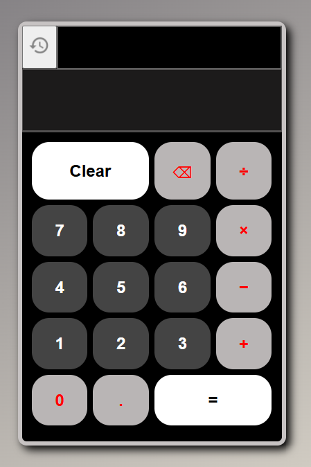
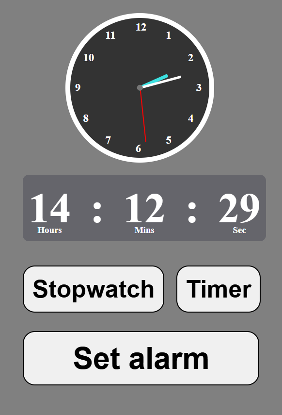
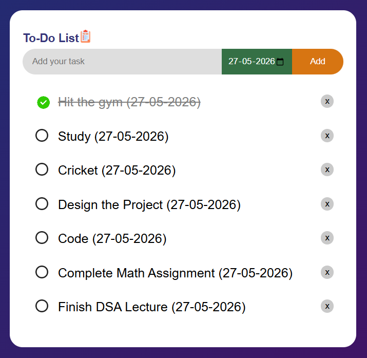

Dark mode
Dark mode
My Projects

Calculator
This calculator displays calculations in real time and includes a history feature that lets users view previous calculations.

Clock
This project includes both an analog clock and a digital clock. It has 3 main features of a clock app.Stopwatch,Timer,Set alarm.

Todo
This Project Keep your tasks of any particular day, you can check off any task that you’ve finished and can delete the tasks from previous days.